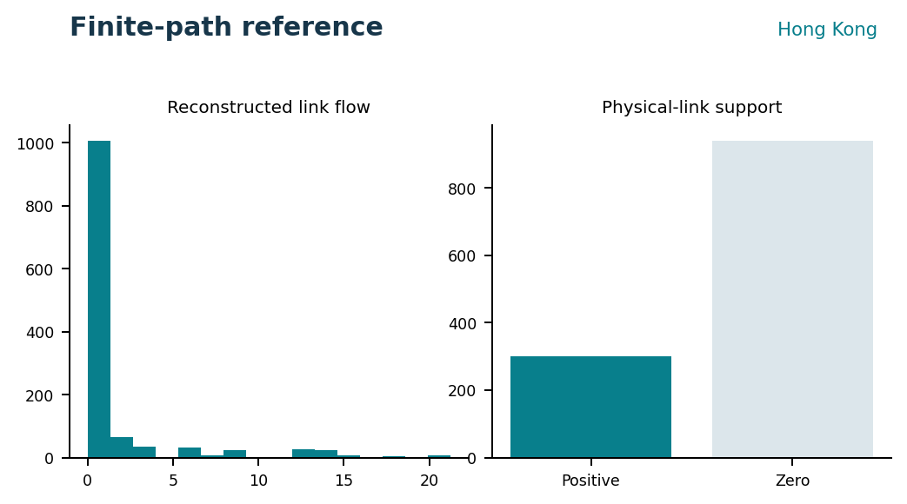
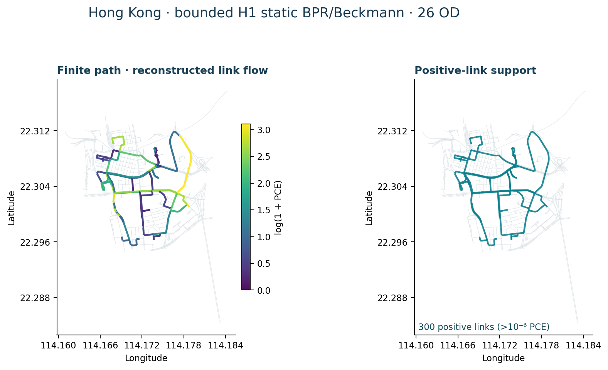
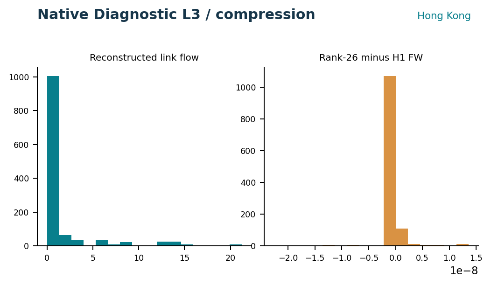
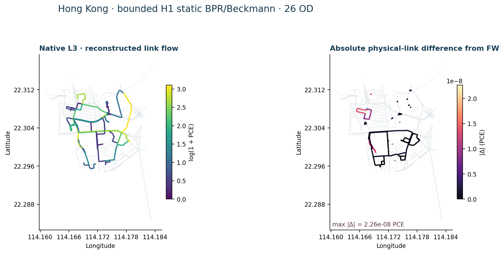
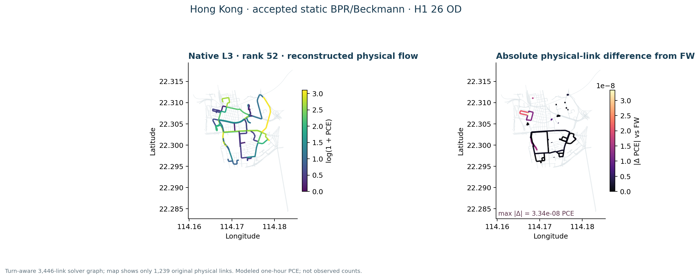
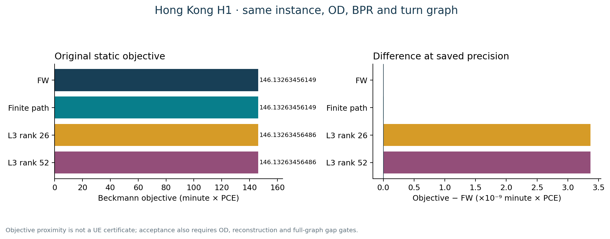

Hong Kong · static Frank–Wolfe and Algorithm B
The accepted assignment-ready graph retains 1,239 directed physical links, source turn restrictions and grade-separation quarantine. All 95 zones reach the selected strongly connected core, but straight zone-access proxies remain unverified for barriers and water. Posted speed limits have an official source; conversion to free speed, lane count and BPR capacity are engineering transfers, not observed link attributes. Phase A gate · Turn routing contract.

All 8,930 directed interzonal pairs are reachable in the proxy core. SVG · Source record.

Static FW and official spartalab/tap-b Algorithm B were evaluated on identical turn-expanded links and 8,930 positive OD pairs. Hong Kong uses an accepted task-local lossless TAPLab-compatible adapter, not official TAPLab registered-adapter parity. The independent evaluator reports Beckmann objective 1,676.01213133 for both methods, maximum physical-flow difference below 1e-12 PCE, zero prohibited turns and zero OD imbalance. The modeled load is 723.191227885 PCE in one hour. Saved comparison · TAPLab/tap-b distinctions.

Modeled PCE under proxy BPR capacity, not a measured count map. SVG · Source record.


The saved independent check covers OD conservation and prohibited turns. SVG · Source record.

Bounded H1 finite-path and Native Diagnostic L3
Public interpretation: ACCEPTED_BOUNDED_LOW_CONGESTION_TRANSFER. This corrected R2 result is on a frozen H1 static turn-aware BPR/Beckmann instance, not on all 8,930 Hong Kong ODs. Its 26 selected positive ODs carry 52.17845064587021 modeled PCE/hour; K=5 generated 126 legal simple paths. The exact H1 FW anchor, finite-path solution, and Native Diagnostic L3 ranks 26 and 52 share the same 3,446-link turn-expanded solver graph and 1,239 original physical links. Corrected R2 source and figure hashes · Figure manifest.
| Tier | Static path/L3 scope | Result boundary |
|---|---|---|
| H0 | 10 OD / 50 paths | Interface smoke only; no optimization result |
| H1 | 26 OD / 126 legal paths | Accepted bounded low-congestion finite-path and rank-26/52 L3 transfer |
| H2 | 100 OD / 492 paths | Path/resource preflight only; not solved |
| Full Hong Kong | 8,930 positive ODs | Finite-path / L3 not demonstrated |
The corrected singleton OD is zone 11 → 12, with one 13-edge legal simple path. Edge-removal reachability was revalidated: removing any edge disconnects that path. Zone 80 → 38 has five legal paths, not one. The saved basis metadata corresponds to minor-path incidence on the full 3,446-link turn-expanded solver-link graph, not physical-link-only incidence. Neither correction changes the saved numerical results.
| Same H1 static method | Recomputed Beckmann objective | Full-graph relative gap |
|---|---|---|
| Exact H1 FW anchor | 146.1326345614876 | −5.835×10⁻¹⁶ |
| Finite-path SLSQP | 146.13263456148755 | −5.835×10⁻¹⁶ |
| Native Diagnostic L3 rank 26 | 146.13263456485635 | 2.3052423×10⁻¹¹ |
| Native Diagnostic L3 rank 52 | 146.13263456485632 | 2.3052228×10⁻¹¹ |
The H1 instance is low-congestion: maximum physical v/c is 0.0425032874, and maximum BPR relative cost increase is about 4.8953×10⁻⁷. FW accepted its initial all-or-nothing flow at the declared tolerance with zero iterations; finite-path flow matches that H1 FW/f0 anchor at saved precision. Independent saved-result replay checked OD conservation, legal paths and turns, original-space reconstruction, physical-link projection, objective, and full-graph gaps. Thus the result validates bounded transfer and reconstruction, not a nontrivial route-splitting compression stress test, rank sensitivity, speedup, or full-city scalability. The accepted full Hong Kong FW/Algorithm B objective is a different 8,930-OD static instance and is not the H1 reference.

Distribution and support of the accepted H1 finite-path physical-link vector. SVG · Source hashes.


H1 26-OD / 126-path reconstructed physical-link flow and support. The low-congestion finite solution equals its H1 FW/f0 anchor at saved precision; modeled PCE, not observed traffic or a full-city result. SVG · Original corrected-R2 figure.



Distribution of saved H1 rank-26 physical-link flow and its difference from the same-instance FW anchor. SVG · Source hashes.


Rank-26 original-space reconstruction and physical-link difference on H1. The declared checks pass; minor-path flow totals 8.43×10⁻⁸ PCE. This low-congestion result is not a route-splitting compression stress test. SVG · Original corrected-R2 figure.



Rank-52 original-space reconstruction and physical-link difference on the same H1 pool. The declared checks pass; minor-path flow totals 9.97×10⁻⁸ PCE. The rank comparison does not establish sensitivity or speedup. SVG.


Recomputed objectives for H1 FW, finite-path, rank 26 and rank 52 on one frozen static instance. Objective agreement is one part of the checks; the accepted interpretation remains bounded low-congestion transfer, supported also by independent full-graph gaps and reconstruction checks. SVG · Corrected R2 source record.

This static BPR/Beckmann objective must not be numerically compared with the later fixed-cost, hard-capacity finite space–time objective. Neither static result is a validated traffic forecast. Case landing.